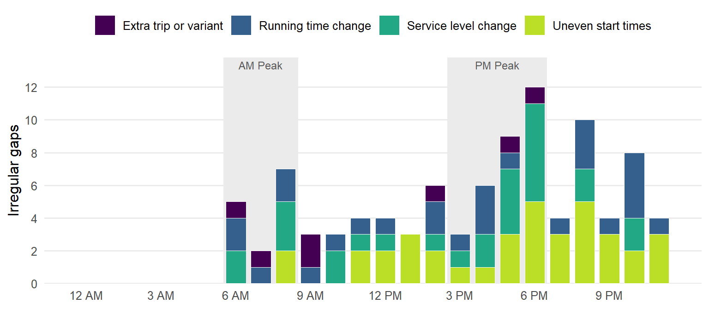

| Status | Gaps | Share |
|---|---|---|
| Counted: both trips inside one period | 4164 | 91.9% |
| Left out: before 6 AM, outside the four periods | 142 | 3.1% |
| Left out: crosses into the next period | 226 | 5.0% |
Why RTD headways vary within a period
A supporting note to the frequent-routes table
The question
The frequent-routes table on the main page shows each route’s median headway, and Additional Data lists its shortest and longest gap in each period. Some ranges are wide (4 to 15 minutes, or 15 to 30), and some gaps are not round numbers like 10 or 15. GTFS is a timetable, not a record of where buses actually were, so none of this is traffic delay. It is something the schedule does on purpose. This note checks every gap between consecutive trips on the 30 routes in that table, using the Wednesday, September 30, 2026 schedule, and sorts each one by cause.
Short answers
- The analysis only counts gaps inside each period. A gap that runs across a period boundary, or from the last trip of the night to 3 AM, used to inflate the longest gap in many cells. Those gaps are now left out, so every range in the table is a real scheduled gap.
- Inside a period, the schedules are regular. 97.7% of gaps that fall wholly inside one period are within a minute of a standard headway. Small differences of a minute or less come from times RTD estimates between timepoints, rounding to whole minutes, and small changes in running time.
- A few routes stack trips into the peaks. Some routes double their frequency in both peaks, one adds trips only in the peak direction, and one adds closely spaced trips in the morning and mid-afternoon. These are deliberate and show up as several standard headways mixed in one period.
- Irregular gaps happen at predictable times. They cluster from 5 to 7 PM, when afternoon running times are longest and service steps down to evening levels. Smaller clusters appear as service ramps up in the morning and in 30-minute evening service. They are not random one-offs. GTFS doesn’t include operator assignments, so driver changes can’t be checked directly.
How the gaps were checked
sql/06_headway_diagnostics.sql lists every trip at the stop each route-direction is measured at (the same stop the main analysis uses). It pairs each trip with the one before it and records:
- the period the gap falls in, or the boundary it crosses;
- the nearest standard headway: 3, 4, 5, 6, 7.5, 10, 12, 15, 20, 30, 45, 60, or 90 minutes. These values repeat evenly within an hour or three hours, so riders see the same minutes past the hour. Eight trips an hour is a 7.5-minute headway, which a timetable in whole minutes has to write as alternating 7 and 8;
- the same two trips’ gap where they started their runs, and each trip’s scheduled running time to the stop;
- whether the stop is a timepoint. RTD schedules exact times only at timepoints and estimates the times at stops in between, which produces values like 14.4 or 18.9.
Each gap then gets the first explanation that fits, tested in this order:
| Explanation | Test |
|---|---|
| Standard headway | Exactly a standard value |
| Within 1 min of standard | Off by a minute or less: an estimated stop time, a running-time change, or rounding |
| Extra trip added between regular trips | This gap plus a neighbouring gap add up to the regular headway, and the regular headway resumes after it |
| Transition between service levels | The regular headway before the gap differs from the one after it (e.g. 15 → 7.5) |
| Trips start at different places | The two trips begin at different stops (a variant, short turn, or bus pulling out of a garage) |
| Running time changed between trips | Same starting stop, and most of the difference comes from one trip being scheduled to take longer |
| Uneven departures from the start of the route | Same starting stop, and the trips were already unevenly spaced when they left it |
1. Which gaps the analysis counts
The main analysis counts a gap only when both trips leave inside the same period. The table below shows how many gaps on the frequent routes that rule leaves out, and why.
The analysis no longer measures the wait after a route’s last trip either. Under the earlier version, that wait ran to the end of the period, so a route ending at 11 PM showed a four-hour “gap” in Late Night.
The rule has a cost. A route that runs every 10 minutes from 6 to 7 AM and then stops looks frequent for the whole AM Peak, because the wait after its last trip isn’t counted. To keep a pair of closely spaced trips (such as a school tripper) from qualifying on its own, a route-direction needs at least 4 trips in the period to count as frequent.
Even with only in-period gaps, some cells still have wide ranges. Most are routes that change frequency partway through a period: starting the AM Peak at 30 minutes before stepping up to 15, or dropping from 15 to 30 between about 6 and 7 PM. The median headway ignores those few long gaps and reports what the route runs for most of the period. The next sections explain the rest.
2. Are deviations from standard headways sensible? Mostly, yes
| Explanation | Gaps | Share |
|---|---|---|
| Standard headway | 3380 | 81.2% |
| Within 1 min of standard: interpolated stop time | 510 | 12.3% |
| Within 1 min of standard: minute rounding | 144 | 3.5% |
| Uneven departures from the start of the route | 37 | 0.9% |
| Within 1 min of standard: running time changed | 30 | 0.7% |
| Transition between service levels | 27 | 0.6% |
| Running time changed between trips | 26 | 0.6% |
| Trips start at different places (variant, short turn or pull-out) | 6 | 0.1% |
| Extra trip added between regular trips | 1 | 0.0% |
Nearly every gap is a standard value or within a minute of one. The one-minute differences are not real irregularities. They come from three sources:
- Estimated stop times. Most bus routes are measured at a busy stop that is not a timepoint. RTD sets times at timepoints and estimates the times between them, so a 15-minute headway can show up as 14.4 or 15.6 minutes.
- Running time changes. When the scheduled trip time grows by a minute heading into the peak, one gap partway along the route stretches to 16 minutes and the gaps after it return to 15.
- Whole-minute rounding. A 7.5-minute headway is published as 7, 8, 7, 8. A 10-minute headway sometimes appears as 9 and 11, and 15 as 14 and 16.
Larger differences are rare (97 gaps, 2.3% of the total). They are listed one by one in section 5.
3. Do some routes stack trips into the commute peaks?
Yes, but only a handful. Most frequent routes run the same 15-minute headway from about 6 AM to 7 PM, with no peak increase. The routes below run at least 15% more trips per hour in their busiest peak direction than at mid-day.
| Route | Name | Direction | AM Peak | Mid-Day | PM Peak | Late Night |
|---|---|---|---|---|---|---|
| 12 | South Downing | 0 | 4.0 | 2.5 | 4.0 | 1.4 |
| 12 | South Downing | 1 | 4.0 | 2.7 | 3.8 | 1.5 |
| 120X | Wagon Road / Thornton Express | 0 | 3.0 | 2.0 | 3.2 | 1.0 |
| 120X | Wagon Road / Thornton Express | 1 | 3.7 | 2.0 | 2.8 | 0.8 |
| 15L | East Colfax Limited | 0 | 5.7 | 6.2 | 7.5 | 1.9 |
| 15L | East Colfax Limited | 1 | 7.3 | 6.3 | 5.8 | 1.1 |
| 204 | Table Mesa / Moorhead / North 19th | 0 | 2.7 | 2.3 | 3.8 | 0.6 |
| 204 | Table Mesa / Moorhead / North 19th | 1 | 2.7 | 2.5 | 3.0 | 0.6 |
| 43 | Martin Luther King Blvd | 0 | 7.3 | 4.3 | 6.5 | 1.6 |
| 43 | Martin Luther King Blvd | 1 | 7.0 | 4.5 | 6.8 | 1.4 |
| E | Union Station to RidgeGate Parkway Station | 0 | 4.0 | 4.0 | 3.8 | 1.4 |
| E | Union Station to RidgeGate Parkway Station | 1 | 4.7 | 4.0 | 3.8 | 1.4 |
| MetroRide | Free MetroRide | 0 | 6.0 | 0.2 | 4.8 | – |
| MetroRide | Free MetroRide | 1 | 5.3 | – | 4.5 | – |
| SKIP | Broadway | 0 | 7.3 | 6.3 | 6.2 | 2.4 |
| SKIP | Broadway | 1 | 8.0 | 6.3 | 5.8 | 2.1 |
These match patterns in the timetable:
- 43 (Martin Luther King Blvd) runs every 7.5 minutes in both directions in both peaks (about 6–9:30 AM and 3–6 PM) and every 15 minutes at mid-day. That’s why its peak ranges are so wide: 7 and 8 alternate, and the 23- and 32-minute gaps are the steps up from and down to 30-minute service, which fall inside the peak periods.
- 15L (East Colfax Limited) stacks trips in the commute direction only: every 7.5 minutes toward downtown in the morning and away from it in the afternoon, with the other direction at 10 minutes. This is the clearest commute-flow pattern in the network.
- SKIP (Broadway, Boulder) runs every 10 minutes and adds trips 5 minutes behind regular ones from about 7:15 to 9:45 AM and 2:45 to 4:30 PM. The afternoon timing fits school and university schedules along Broadway better than a 5 PM commute.
- 12 (South Downing), 120X (Wagon Road / Thornton Express) and 204 (Table Mesa / Moorhead / North 19th) run every 15 minutes in the peaks and every 30 at mid-day. The 120X and 204 only qualify because the median counts their 15-minute stretch, which covers most of the peak. The 204 starts its morning 15-minute service around 7:45, so it falls just short in the AM Peak.
- E Line has a few extra morning trains a few minutes apart around 6:15 AM. These are trains entering service at different stations before settling into 15-minute service, so the E’s AM Peak range starts below 3 minutes.
- Free MetroRide runs only in the peaks, every 10 minutes, with no service at mid-day.
Stacked trips don’t produce off-pattern numbers. They produce several standard headways in one period (5 and 10, or 7.5 and 15), and the min–max range spans them. The pattern table in output/route_period_pattern.csv lists the standard headways each route uses in each period.
4. One-offs, or predictable times?

The irregular gaps are not spread evenly across the day. The largest cluster is 5 to 7 PM. Most fall into three situations:
- Where service changes level. Going from 30-minute early-morning service to 7.5 minutes, or from 15 to 30 in the evening, usually leaves one odd gap (23, 26, 32) while the schedule shifts to the new spacing.
- In the PM peak. Scheduled running times are longest in afternoon traffic. Schedulers usually move the starting times to keep the spacing even partway along the route, but when running time jumps by several minutes between consecutive trips, a 17- or 18-minute gap appears at the measured stop.
- Late at night. Several routes run “30-minute” evening service with gaps of 31 to 34 minutes. These are uneven departures from the start of the route, likely from fitting a round-trip time that doesn’t divide evenly into 30 minutes.
Driver changes. GTFS records which vehicle runs each trip (block_id) but not which operator, so driver reliefs can’t be identified. As a partial check, the vehicle blocks were reviewed for the unevenly spaced trips on this schedule. In most cases the bus had 10 to 25 minutes of layover before the trip, so a late-arriving bus did not force the odd spacing. It was written into the schedule, possibly for a relief or a timed transfer that GTFS doesn’t record.
5. Every irregular gap on the frequent routes
Each row is a gap wholly inside one period that is more than one minute from a standard headway. “Before” and “after” are the neighbouring gaps, and “at start” is the same pair of trips’ gap where they began their runs. Running times are in minutes from each trip’s first stop to the measured stop.
| Route | Dir | Period | Leaves | Before | Gap | After | At start | Running time | Explanation |
|---|---|---|---|---|---|---|---|---|---|
| 0 | 1 | AM Peak | 08:37 | 15 | 13.1 | 10 | 14 | 13.5 → 12.6 | Transition between service levels |
| 0 | 1 | Mid-Day | 11:35 | 15 | 13.1 | 15 | 12 | 12.6 → 13.7 | Uneven departures from the start of the route |
| 0 | 1 | PM Peak | 16:36 | 15 | 18 | 12 | 18 | 15.7 → 15.7 | Transition between service levels |
| 0 | 1 | PM Peak | 17:22 | 15 | 18.9 | 15 | 21 | 15.7 → 13.6 | Uneven departures from the start of the route |
| 0 | 1 | PM Peak | 18:41 | 15 | 18.7 | 15 | 21 | 13.6 → 11.3 | Uneven departures from the start of the route |
| 105 | 0 | PM Peak | 17:14 | 15 | 17 | 15 | 17 | 10.7 → 10.7 | Uneven departures from the start of the route |
| 105 | 0 | PM Peak | 18:03 | 15 | 18.9 | 15 | 21 | 10.7 → 8.7 | Uneven departures from the start of the route |
| 105 | 0 | Late Night | 20:07 | 30 | 32.9 | 30 | 34 | 8.6 → 7.5 | Uneven departures from the start of the route |
| 105 | 0 | Late Night | 21:39 | 30 | 32 | 30 | 32 | 7.5 → 7.5 | Uneven departures from the start of the route |
| 105 | 0 | Late Night | 23:11 | 30 | 31.9 | 30 | 32 | 7.5 → 7.5 | Uneven departures from the start of the route |
| 105 | 1 | AM Peak | 06:34 | 15 | 17.9 | 15 | 15 | 36.4 → 39.3 | Running time changed between trips |
| 105 | 1 | AM Peak | 08:08 | 15 | 17.9 | 15 | 15 | 40.3 → 43.2 | Running time changed between trips |
| 105 | 1 | Mid-Day | 14:40 | 15 | 18.9 | 15 | 15 | 41.3 → 45.2 | Running time changed between trips |
| 105 | 1 | PM Peak | 16:32 | 15 | 17 | 15 | 15 | 50.2 → 52.2 | Running time changed between trips |
| 105 | 1 | Late Night | 20:03 | 15 | 26.1 | 30 | 30 | 42.3 → 38.4 | Transition between service levels |
| 105 | 1 | Late Night | 22:01 | 30 | 28 | 30 | 30 | 38.4 → 36.4 | Running time changed between trips |
| 12 | 0 | PM Peak | 17:33 | 15 | 16.8 | 15 | 62 | 47.5 → 2.2 | Trips start at different places (variant, short turn or pull-out) |
| 12 | 1 | Mid-Day | 10:08 | 5 | 25 | 30 | 25 | 9.6 → 9.6 | Transition between service levels |
| 12 | 1 | PM Peak | 17:24 | 16 | 17 | 13 | 17 | 9.1 → 9.1 | Transition between service levels |
| 12 | 1 | PM Peak | 17:54 | 13 | 17 | 15 | 17 | 9.1 → 9.1 | Transition between service levels |
| 120X | 0 | Mid-Day | 12:26 | 30 | 27 | 30 | 30 | 14 → 11 | Running time changed between trips |
| 120X | 0 | Late Night | 19:38 | 30 | 35 | 30 | 36 | 13 → 12 | Uneven departures from the start of the route |
| 120X | 1 | AM Peak | 06:44 | 15 | 17 | 15 | 15 | 9 → 11 | Running time changed between trips |
| 120X | 1 | AM Peak | 08:45 | 15 | 17 | 32 | 17 | 10 → 10 | Transition between service levels |
| 120X | 1 | Mid-Day | 11:17 | 31 | 28 | 30 | 30 | 11 → 9 | Running time changed between trips |
| 120X | 1 | PM Peak | 15:45 | 31 | 27 | 17 | 27 | 10 → 10 | Transition between service levels |
| 120X | 1 | PM Peak | 16:02 | 27 | 17 | 17 | 17 | 10 → 10 | Transition between service levels |
| 120X | 1 | PM Peak | 16:19 | 17 | 17 | 15 | 17 | 10 → 10 | Uneven departures from the start of the route |
| 120X | 1 | Late Night | 20:59 | 30 | 40 | 60 | 40 | 9 → 9 | Transition between service levels |
| 121 | 0 | Late Night | 23:40 | 30 | 18 | 30 | 18 | 23.6 → 23.6 | Uneven departures from the start of the route |
| 121 | 1 | Mid-Day | 09:27 | 14 | 17 | 14 | -16 | 13 → 46 | Trips start at different places (variant, short turn or pull-out) |
| 121 | 1 | Mid-Day | 14:44 | 14 | 17 | 14 | 46 | 45 → 16 | Trips start at different places (variant, short turn or pull-out) |
| 121 | 1 | Late Night | 19:56 | 30 | 28 | 36 | 30 | 45 → 43 | Running time changed between trips |
| 121 | 1 | Late Night | 20:32 | 28 | 36 | 30 | 31 | 43 → 48 | Running time changed between trips |
| 15 | 0 | Late Night | 23:19 | 15 | 13.4 | 15 | 15 | 36.4 → 34.8 | Running time changed between trips |
| 153 | 1 | PM Peak | 15:13 | 15 | 13.7 | 16 | 12 | 8.1 → 9.8 | Uneven departures from the start of the route |
| 153 | 1 | PM Peak | 18:17 | 15 | 16.2 | 12 | 17 | 8.9 → 8.1 | Transition between service levels |
| 153 | 1 | Late Night | 23:01 | 30 | 32 | 30 | 32 | 8.1 → 8.1 | Uneven departures from the start of the route |
| 15L | 1 | PM Peak | 17:50 | 10 | 17 | 15 | 17 | 14 → 14 | Transition between service levels |
| 15L | 1 | PM Peak | 18:52 | 15 | 17 | 14 | 31 | 14 → 0 | Trips start at different places (variant, short turn or pull-out) |
| 16 | 0 | Late Night | 22:24 | 30 | 28.2 | 30 | 30 | 26.6 → 24.7 | Running time changed between trips |
| 16 | 1 | Mid-Day | 11:31 | 10 | 8.6 | 10 | 6 | 15.6 → 18.2 | Uneven departures from the start of the route |
| 16 | 1 | Late Night | 21:52 | 30 | 33.7 | 30 | 36 | 15.6 → 13.3 | Uneven departures from the start of the route |
| 17 | 0 | Late Night | 22:18 | 30 | 31.6 | 30 | 34 | 18 → 15.6 | Uneven departures from the start of the route |
| 17 | 1 | AM Peak | 06:25 | 30 | 17 | 15 | 14 | 24.5 → 27.5 | Transition between service levels |
| 17 | 1 | Mid-Day | 09:26 | 15 | 16.2 | 15 | 14 | 27.5 → 29.7 | Running time changed between trips |
| 17 | 1 | Late Night | 20:39 | 30 | 28.4 | 30 | 31 | 29.5 → 26.9 | Running time changed between trips |
| 17 | 1 | Late Night | 22:37 | 30 | 27.4 | 30 | 30 | 26.9 → 24.3 | Running time changed between trips |
| 204 | 0 | Mid-Day | 10:31 | 15 | 22 | 30 | 22 | 41.5 → 41.5 | Transition between service levels |
| 204 | 0 | PM Peak | 18:45 | 15 | 28.9 | 29 | 32 | 39.5 → 36.4 | Transition between service levels |
| 204 | 0 | Late Night | 20:10 | 30 | 26 | 30 | 26 | 38.4 → 38.4 | Uneven departures from the start of the route |
| 204 | 1 | Late Night | 20:36 | 30 | 36 | 30 | 36 | 10.8 → 10.8 | Uneven departures from the start of the route |
| 21 | 0 | AM Peak | 08:54 | 15 | 13.3 | 15 | 15 | 16.3 → 14.7 | Running time changed between trips |
| 21 | 0 | Mid-Day | 10:22 | 15 | 13.2 | 15 | 15 | 14.7 → 12.8 | Running time changed between trips |
| 21 | 0 | Mid-Day | 14:24 | 15 | 16.9 | 15 | 15 | 12.8 → 14.7 | Running time changed between trips |
| 21 | 0 | PM Peak | 17:53 | 15 | 13.2 | 15 | 15 | 15.5 → 13.7 | Running time changed between trips |
| 21 | 0 | PM Peak | 18:51 | 15 | 28.2 | 30 | 30 | 13.7 → 11.8 | Transition between service levels |
| 30 | 1 | Late Night | 21:43 | 30 | 28 | 30 | 30 | 38 → 36 | Running time changed between trips |
| 40 | 0 | Mid-Day | 13:57 | 15 | 13.2 | 15 | 11 | 37.8 → 39.9 | Uneven departures from the start of the route |
| 40 | 0 | PM Peak | 18:13 | 15 | 17 | 15 | 22 | 44.9 → 39.9 | Uneven departures from the start of the route |
| 40 | 1 | AM Peak | 07:01 | 15 | 17 | 15 | 15 | 15 → 17 | Running time changed between trips |
| 40 | 1 | PM Peak | 16:47 | 15 | 16.3 | 15 | 15 | 16.6 → 18 | Running time changed between trips |
| 40 | 1 | Late Night | 22:12 | 30 | 28.4 | 30 | 30 | 14 → 12.3 | Running time changed between trips |
| 43 | 0 | AM Peak | 06:26 | 30 | 23 | 7 | 23 | 19.4 → 19.4 | Transition between service levels |
| 43 | 0 | PM Peak | 18:32 | 7 | 31.9 | 30 | 33 | 21.5 → 20.4 | Transition between service levels |
| 43 | 1 | PM Peak | 18:53 | 15 | 26.2 | 27 | 30 | 32 → 28.2 | Transition between service levels |
| 73 | 0 | PM Peak | 15:20 | 15 | 16.5 | 15 | 10 | 34.7 → 41.2 | Running time changed between trips |
| 73 | 0 | PM Peak | 18:48 | 15 | 13.5 | 30 | 21 | 43.2 → 35.7 | Transition between service levels |
| 73 | 1 | AM Peak | 07:31 | 14 | 1 | 15 | 1 | 16.3 → 16.3 | Extra trip added between regular trips |
| 73 | 1 | AM Peak | 08:33 | 15 | 16.8 | 15 | 17 | 16.3 → 16 | Uneven departures from the start of the route |
| 73 | 1 | Mid-Day | 14:01 | 15 | 13.3 | 15 | 11 | 16 → 18.3 | Uneven departures from the start of the route |
| 73 | 1 | Mid-Day | 14:59 | 15 | 13.3 | 15 | 11 | 18.3 → 20.5 | Uneven departures from the start of the route |
| 73 | 1 | PM Peak | 17:32 | 15 | 17.5 | 15 | 22 | 20.5 → 16 | Uneven departures from the start of the route |
| 73 | 1 | Late Night | 19:33 | 30 | 31.7 | 30 | 33 | 16 → 14.8 | Uneven departures from the start of the route |
| Bound | 0 | PM Peak | 18:12 | 15 | 18 | 15 | 18 | 4.5 → 4.5 | Uneven departures from the start of the route |
| Bound | 0 | PM Peak | 18:57 | 14 | 16.5 | 15 | 17 | 4.5 → 4 | Uneven departures from the start of the route |
| Bound | 1 | AM Peak | 08:25 | 15 | 17 | 15 | 17 | 0 → 0 | Uneven departures from the start of the route |
| Bound | 1 | Mid-Day | 12:28 | 15 | 18 | 15 | 18 | 0 → 0 | Uneven departures from the start of the route |
| Bound | 1 | Late Night | 20:24 | 30 | 26 | 30 | 26 | 0 → 0 | Uneven departures from the start of the route |
| FF1 | 0 | Mid-Day | 12:07 | 15 | 17 | 16 | 17 | 5 → 5 | Uneven departures from the start of the route |
| FF1 | 0 | Late Night | 22:33 | 30 | 28 | 30 | 28 | 4 → 4 | Uneven departures from the start of the route |
| FF1 | 1 | PM Peak | 16:43 | 15 | 18 | 15 | 15 | 47 → 50 | Running time changed between trips |
| FF1 | 1 | Late Night | 20:39 | 30 | 28 | 30 | 31 | 47 → 44 | Running time changed between trips |
| JUMP | 0 | Mid-Day | 13:49 | 15 | 13.2 | 17 | 13 | 4.2 → 4.5 | Uneven departures from the start of the route |
| JUMP | 0 | Mid-Day | 14:06 | 13.2 | 17 | 15 | 17 | 4.5 → 4.5 | Transition between service levels |
| JUMP | 0 | Late Night | 21:31 | 30 | 25 | 35 | 25 | 4.3 → 4.3 | Uneven departures from the start of the route |
| JUMP | 0 | Late Night | 22:06 | 25 | 35 | 30 | 35 | 4.3 → 4.3 | Transition between service levels |
| JUMP | 1 | AM Peak | 06:39 | 14 | 18 | 16 | 7 | 31.7 → 42.7 | Trips start at different places (variant, short turn or pull-out) |
| JUMP | 1 | AM Peak | 08:40 | 15 | 18 | 11 | 11 | 35.7 → 42.7 | Transition between service levels |
| JUMP | 1 | Mid-Day | 09:38 | 14 | 17 | 16 | 12 | 37.7 → 42.7 | Trips start at different places (variant, short turn or pull-out) |
| JUMP | 1 | Mid-Day | 11:38 | 12 | 18.8 | 16 | 18 | 17.7 → 18.5 | Transition between service levels |
| JUMP | 1 | Mid-Day | 12:54 | 13 | 17 | 14 | 17 | 18.5 → 18.5 | Transition between service levels |
| JUMP | 1 | Mid-Day | 13:54 | 16 | 18 | 14 | 18 | 18.5 → 18.5 | Uneven departures from the start of the route |
| JUMP | 1 | PM Peak | 17:51 | 10 | 18 | 15 | 25 | 41.7 → 34.7 | Transition between service levels |
| JUMP | 1 | Late Night | 20:43 | 30 | 33 | 30 | 33 | 38.7 → 38.7 | Uneven departures from the start of the route |
| SKIP | 0 | Late Night | 22:18 | 15 | 17 | 13 | 17 | 16 → 16 | Transition between service levels |
| T | 0 | Late Night | 19:57 | 30 | 38 | 30 | 38 | 29.8 → 29.8 | Uneven departures from the start of the route |
Three cases worth a closer look. The second involves gaps that land on standard values, so it doesn’t appear in the table:
- 73, 7:31 AM, 1-minute gap. The 7:14 trip continues onto Route 11 (headsign “Leetsdale 11 I-25/Broadway”) and runs one minute ahead of the regular 7:15 trip. The 73 effectively gets an extra peak trip from an interlined bus.
- 73, about 4:40 PM, 4 then 11 minutes. A short-turn trip starts partway along the route and slips in between two regular 15-minute trips during the PM peak.
- 12, around 9:30–10 AM, 5 then 25 minutes. The 12 alternates its full route with a short “Corona St & Colfax via 30th” pattern. When it drops from 15- to 30-minute service, the two patterns briefly stop interleaving evenly.
Limitations
- Schedule only. This explains the published timetable. Actual gaps on the street vary more because of traffic and bunching, which the schedule-only GTFS can’t show.
- One measuring stop per route-direction. A gap that looks uneven at the measured stop can be even at the terminal, and the reverse. The running-time and starting-gap columns show which applies.
- “Within a minute” is a judgment call. A two-minute tolerance would move a few more gaps into the regular group without changing any conclusion here.